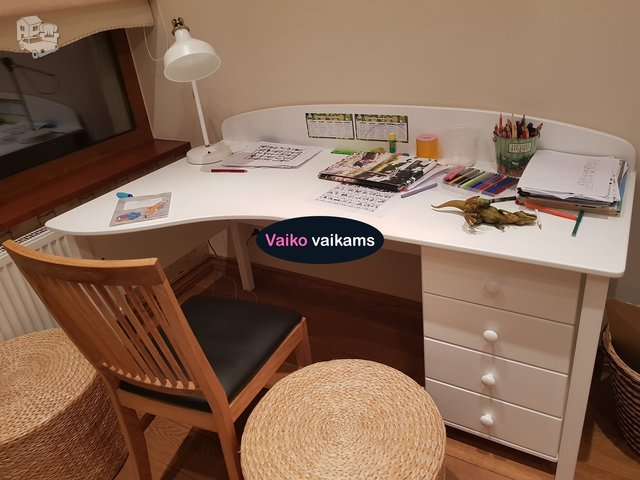

Stalai, staliukai – jaukumas.lt

Užuolaidos Namų tekstilė Kategorijos Kilimai Pagalvėlės Patalynė Pledai Staltiesės Užuolaidos Tapetai Tapetai Baldai Kategorijos Kėdės Minkštieji baldai Spintos, komodos Stalai, staliukai Šviestuvai Gamintojai Zuiver Dutchbone White Label Living Bold Monkey Užuolaidos Tapetai Namų aksesuarai Paslaugos Akcijos lt English Lietuvos Ieškoti
Rodyti visus rezultatus...
Prisijungti / Registruotis 0Stalai, staliukai
FiltraiRodomi 1–21 produktai - viso yra 161
Apvalus kavos staliukas BOLI
159,00 € DaugiauApvalus stalas DENISE
272,00 € DaugiauAugalų stovų komplektas STALWART
158,00 € DaugiauBarinis stalas DECLAN
329,00 € DaugiauBaro stalas EWAN
260,00 € DaugiauBistro staliukas OWN THE GLOW
399,00 € DaugiauKavos stalas JOY
306,00 € DaugiauKavos staliukas DOPE AS HELL
439,00 € DaugiauKavos staliukas HYPNOTISING ROUND
319,00 € DaugiauKavos staliukas SHINY BOMB
299,00 € DaugiauKavos staliukas SNOW
69,00 € DaugiauKavos staliukas SNOW BRUSHED
149,00 € DaugiauKavos staliukų komplektas BOLI
209,00 € DaugiauKonsolė „ROCCO“
439,00 € DaugiauKonsolė BARBIER
349,00 € DaugiauKonsolė CLASS
499,00 € DaugiauKonsolė DENISE
181,00 € DaugiauKonsolė DUSTIN
219,00 € DaugiauKonsolė GUSTO
398,00 € DaugiauKonsolė VOLAN
589,00 € DaugiauLauko stalas VONDEL
699,00 € Daugiau 1 2 3 4 … 6 7 8Produktų kategorijos
Akcijos Kėdės Stalai, staliukai Minkštieji baldai Spintos, komodos Šviestuvai Namų aksesuarai Kilimai Pledai Pagalvėlės Staltiesės PatalynėGamintojas
Bold Monkey (17) Zuiver (44) Dutchbone (62) White Label Living (31)Filtruoti pagal kainą
Kuo mūsų studija skiriasi nuo kitų? Iš tiesų mes džiaugiamės galėdami kūrybingai atnaujinti Jūsų namus, kuriems norime ir galime suteikti daugiau jaukumo, savitumo ir originalumo!
Vilnius
+370 650 50096 vilnius@jaukumas.lt P. Lukšio g. 32, LT-08222 Vilnius Domus GalerijaKaunas
+370 633 06646 kaunas@jaukumas.lt Savanorių pr. 166, LT-44149, KaunasKlaipėda
+370 655 60840 jaukumas.klaipeda@gmail.com Minijos g. 42, LT-91197 Klaipėda "Nic" namų idėjų centrasŠiauliai
+370 655 01445 siauliai@jaukumas.lt Vairo g. 8, LT-78140, ŠiauliaiInformacija
Apie mus Apmokėjimo būdai Grąžinimo teisė Kontaktai Prekių pirkimo – pardavimo taisyklės Pristatymas Slapukų politika © 2020 UAB Aderlita , “Jaukumas” interjero ir užuolaidų studija. IeškotiRodyti visus rezultatus...
Naujienlaiškis
Norėdami užsiprenumeruoti naujienlaiškį
įveskite vardą ir savo el. pašto adresą.
